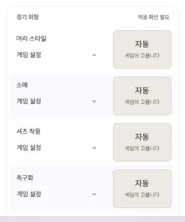
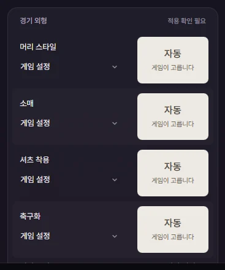

Tools
Match appearance
Explains 'Appearance' and 'Match appearance' on a player tab's Info page. Match appearance is an FMAX feature for choosing a player's 3D match look—hairstyle, sleeves, boots, gloves, and more.
Player tab › Info has two sections that control how a player looks.
| Section | What it covers | Where it is saved |
|---|---|---|
| Appearance | In-game player attributes: ethnicity, Hair colour, Hair length, Skin tone, Body Type | Written to the game, so it stays in your save file |
| Match appearance | 3D match kit & gear: Hairstyle, Sleeves, Shirt tuck, Boots, Gloves, and more | Saved only in FMAX, and applied to matches while FMAX is running |

Appearance section
Change values just like any other field and click Save. See Editing players for the basics of editing values. Skin tone may appear 1 higher in other editing tools.
Match appearance section
Pick what each player wears in 3D matches. Every field starts at Game setting, which leaves the game to choose as usual.
| Field | Options |
|---|---|
| Hairstyle | Game setting, Bald, Short 1…, Medium 1…, Long 1… |
| Sleeves | Game setting, Short sleeves, Long sleeves |
| Shirt tuck | Game setting, Untucked, Tucked in |
| Boots | Game setting, Boots 1, 2, … |
| Undershirt, Tights, Gloves | Game setting, Worn, Never |
| Arm cast, Head bandage, Elbow support, Face mask | Game setting, Worn, Never |
| Wristwatch | Game setting, Worn, Never |
| Hijab | Game setting, Worn, Never (shown for female players only) |
Available hairstyles depend on the player's gender and whether they are a regen or a Real player.



Previews and See all
Next to Hairstyle, Sleeves, Shirt tuck, and Boots is a front and back model preview. When set to 'Game setting', it reads 'Auto · Game decides'.
- Click the preview image (See all) to open a visual grid of every option for that field.
- Click any thumbnail to select it. The picker stays open so you can compare neighbouring styles easily.
- Click Close.
- Click Save at the top or press Ctrl+S.
Hair and kit colours in the previews are fixed for easy comparison, so they won't match live match lighting.
When changes apply to the game
- FMAX asks 'Have you backed up your save?' for the first time, because it hooks into how the game handles match appearances while FMAX is open.
- Once saved, your choices apply to matches for as long as FMAX stays open. Check your updated look the next time you enter a 3D match view.
- When you close FMAX normally, the game's appearance handling returns to normal. Your saved looks live in FMAX separately for each save rather than inside the save file itself. Reopen FMAX and connect to the game to apply them again.
- If you turn off Restore previous state when reopening FMAX in Settings, FMAX starts with match appearances paused each time you launch it.
The current status appears on the right of the section header.
| Status | Meaning |
|---|---|
| Using game settings | No custom appearance has been set for this player |
| Active | Applied in the game |
| Waiting for game | Applies once connected to the game |
| Not applied | Could not be applied to this player. The red note below explains why |
| Needs attention | Ran into an issue while applying. Check the note below |
How the game handles gear
Expand How it works beneath the section to see these same rules inside the app.
- When Undershirt, Tights, or Gloves are left on Game setting, the game gives each item a 50/50 chance on matchdays below 5°C. Goalkeepers wear goalkeeper gloves instead of outfield gloves.
- Casts, supports/masks, and Hijab are decided per match by the game based on player status. Only the referee wears a Wristwatch by default.
- Wearing an Arm cast or Elbow support forces Short sleeves. Either of those—or Long sleeves—hides the Undershirt. An Arm cast also removes Gloves.
- Wearing a Face mask removes a Head bandage, and both Head bandage and Hijab cover the player's hair.
Pausing all and cleaning up
- Pause match appearance: Removes all custom appearances from the game at once. This toggle is shared across every save. Your saved choices stay intact, and Resume saved appearance turns them right back on.
- Remove mismatched: Appears alongside a red warning if saved appearance entries don't match this save's players (for example, the player could not be found in the game, or a chosen hairstyle doesn't belong to their current gender or regen/real-player list). Click it and confirm to remove those entries from this save's list in FMAX. In-game values are untouched.
- Changing a player's gender switches their available hairstyle list, resetting Hairstyle to 'Game setting'. Switching a player to Male also hides the Hijab row.